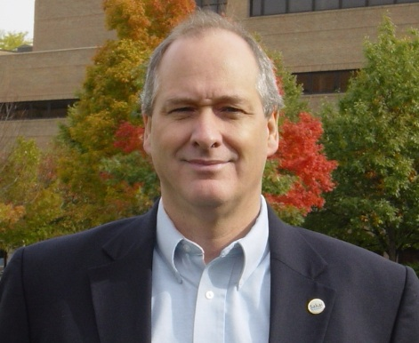

|  | Charles Severance
University of Michigan |
|
Bio: My resume is available online at http://www.dr-chuck.com/ and describes my experience and and employment history. Since it is a long document, I have extracted important elements and tried to show how they apply in the context of Sakai. Sakai must be suitable for Enterprise deployment within Higher Education. I worked supporting Campus Enterprise IT infrastructure for over 20 years. Over the years, I have lead teams designing, deploying, and supporting the campus file system, campus E-Mail system, supercomputer systems, computer labs and the campus networks. Sakai must be relevant in teaching and learning in higher education. I have taught Computer Science at the Community College level and at two Universities. I have always made use of the best available technology in my teaching. I taught one of the first courses in the country in 1996 to deliver the entire course content over streaming media (this was in the days of 28.8 modems). I have taught courses in areas that include: languages, architecture, data structures, databases, and high performance computing applications. The lack of a decent text book in high performance computing led me to write the O'Reilly book on the topic. The lack of a decent extendible widely deployed enterprise infrastructure for teaching and learning has led me to Sakai. Sakai must enable innovation in teaching and learning. Because I am an "early adopter" of technology in my teaching, I have requirements that are simply not met by existing technologies. I built two software tools Sync-O-Matic and ClipBoard to meet my needs and built small communities around those tools. The great limiting factor to the adoption of my tools was the lack of a universally deployed open source teaching and learning infrastructure in which to deploy those tools. Sakai must support research and small group collaboration. Prior to the Sakai project I spent several years designing the collaborative and data aspects of NEESgrid project. NEESgrid developed a collaborative science project in the Structural Engineering field. I used Sakai technology coupled with data repository technology, simulation support, and experimental support to build an environment to allow researchers around the world to work together on experiments, research, and other collaborative activity for their field. Sakai must work with, adopt, and influence standards for teaching and learning. I have been participating heavily in standards activity for 15 years. I was the Vice Chair of the IEEE POSIX steering committee and member of the IEEE Standards Activity Board. I was one of the primary authors of the IEEE POSIX Open System Environment specification. I also have participated in the IEEE LTSC committee in the development of the IEEE LOM specification. I currently am an IMS technical board co-char and actively working on the IMS Tool Interoperability and IMS Common Cartridge efforts. In addition to providing the actual standards, working with standards organizations is a great way to learn how to build and manage a community. Sakai must be relevant beyond higher education. In 1994 I was one of the founders of the South Central Network Consortium which gave over 100 schools in Michigan their first Internet connection and each school's first server on the Internet. In 2001, I was the chief architect of a project called the Ford Learning Network - which designed, built, and deployed a competency based customized learning management system for Ford Motor Company. Sakai must build on its accomplishments to date and continue to grow. For the past two years Sakai has been my only focus, during that time, we have learned what has worked and what has not worked. I bring that accumulated knowledge from being the Chief Architect of the Sakai Project with me should I be elected and join the Sakai board. Platform:
Going forward, the Sakai Foundation intends to produce the best collaboration and learning environment with a limited number of directly funded employees. The real work of Sakai will be done by "volunteers". Sometimes those volunteers will be institutions and sometimes those volunteers will be individuals. Sakai must properly harness and orchestrate all of the talent in its community. Thanks to the hard work of the Sakai Project, we are starting out with a nice piece of software in the form of the Sakai 2.1 release. This software has a reasonable set of features, is production ready, and is in production at a number of institutions. The foundation's challenge is to determine how we move forward from here and build on the work of the Sakai Project in a sustainable way. Perhaps the best example of how I see the future working is how the MailTool is being developed. This tool was developed by an individual who was adding a feature to their own Sakai. The tool started out very simple and then several other Sakai sites adopted the tool. These sites helped improve some of the little flaws in the tool until it met their needs. Then the Sakai Project took a look at trying to include the tool in the 2.1 release - it was still a little too rough on the edges so the team went back to cleaning it up. After the 2.1 release introduced sections and groups in the Sakai framework, the MailTool team is setting about how to make the tool section aware and getting it ready for possible inclusion in the 2.2 release. This is an example of the community at work. It happened in a somewhat organic fashion. But it did happen in the context and community of Sakai. The design and implementation work is all done in the open and the entire Sakai community is informed of project and welcome to join the project. The Sakai architecture, release and QA folks drop in on the project from time to time and give some guidance as to how to best fit this into Sakai - but otherwise the project is left to its own devices. It finds and uses resources, it makes design decisions, it fixes bugs. In short, it is its own little entrepreneurial "nexus" within Sakai. There are other excellent examples of dynamic teams which have done development in the way that I see the future of Sakai: Melete, JForum, IU Discussion, Rwiki, OSP, and the SU tools are excellent examples where work was accomplished by teams that did not require continuous involvement from Sakai - each of these teams has self-organized and self-managed. Sakai "staff" have only been consultants to these projects as necessary. The Sakai community members are informed of the work in these projects and get involved in the projects as they see fit. The Sakai Foundation is not the "Vendor" or "Creator" of Sakai - the Sakai Community is where Sakai is created and evolved. The foundation must focus its energy in building the community and then supporting and coordinating these distributed efforts and insuring that the efforts eventually improve the overall Sakai product. Individuals and institutions affect Sakai by their contributions to the community. The good news is that we have already made progress in changing the thinking from "Project" to "Community" already - the 2.1 release effort included developers from 10 institutions and there are two new tools (SU and RWiki) in the 2.1 release designed and developed by the community. I look forward to serving on the Sakai Foundation board and helping Sakai move to the next level in its organizational development. | |